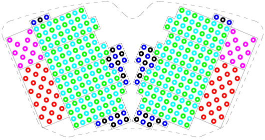

12 inch WPI pogo pin assignment
The figure below shows the general pin layout structure of one of the eight pogo tower segments of a 12 inch WPI.

Signal lines (with ground pins) are located in the center of the segment. Utility and DPS lines (without ground pins) are located to the left and right of the signal lines.
The generic 12 inch WPI DUT boards feature separate digital and analog ground planes. For performance reasons you might need to keep these grounds separate down to the probe card. Since all ground pins are connected within a pogo segment, a pogo segment can only be connected to a digital or analog ground plane.